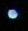
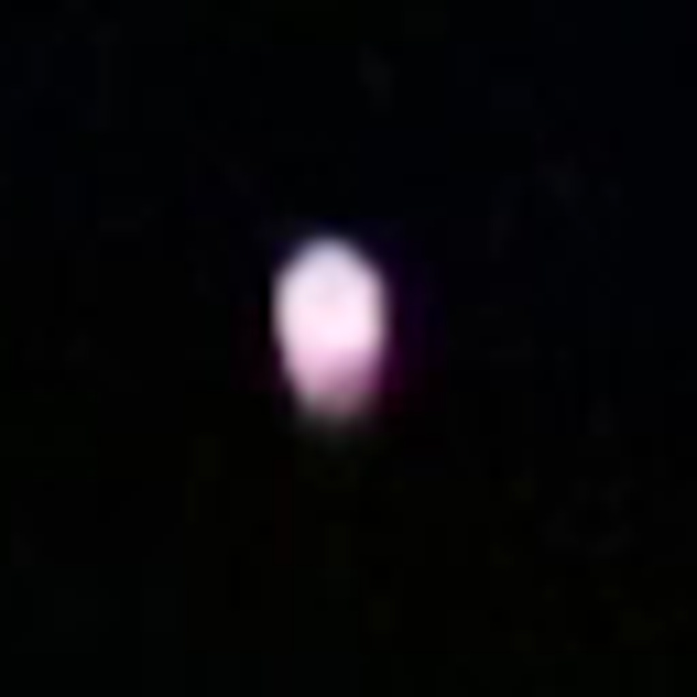
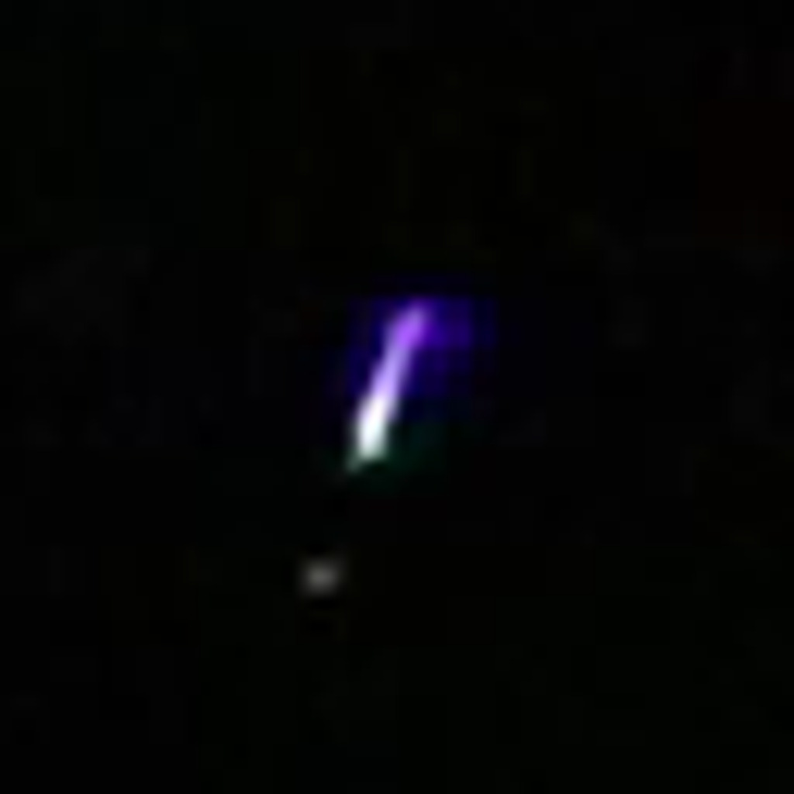
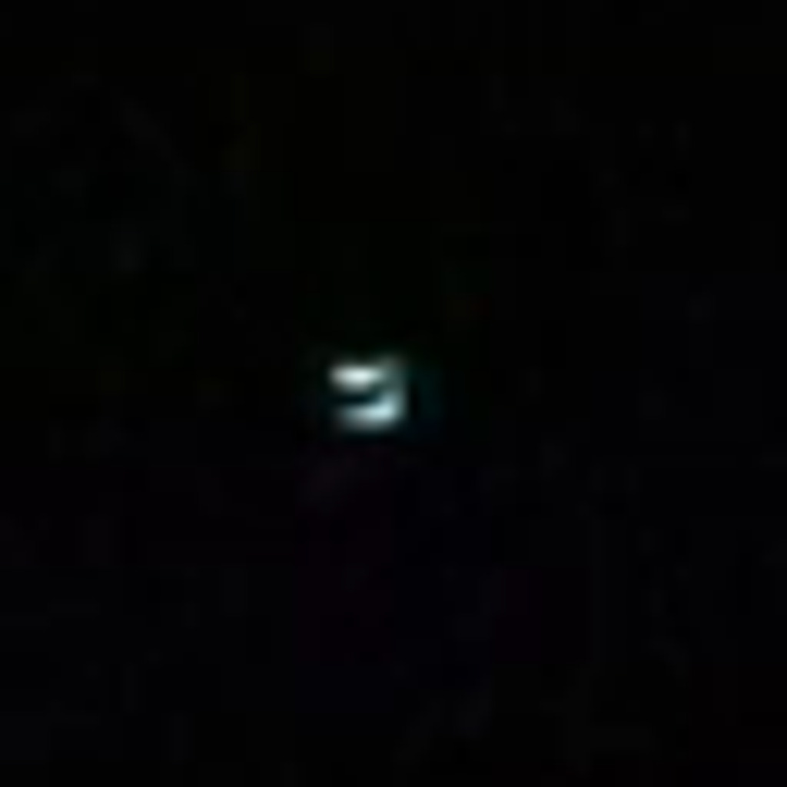
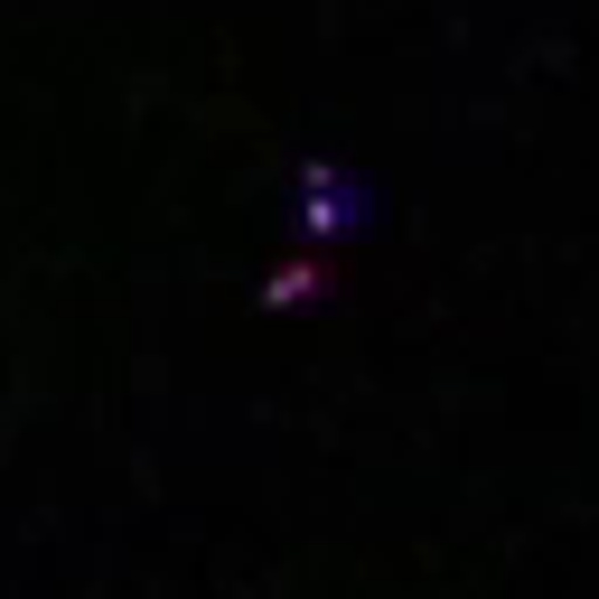
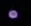
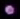

Point your camera at the sky.
Find a place clear of obstructions where you can aim your camera skyward.

Star People is an observation network for people with wonder.
All detection examples are real captures from our Field Station.
Join the network ↗See how it works ↓
One camera has a point of view. A network has perspective. The idea is simple: independent stations, connected by a shared way of spotting the unexpected.
A permanently mounted camera watches its local sky. A small computer looks for motion and classifies what appears.




Find a place clear of obstructions where you can aim your camera skyward.
Our open anomaly vision model powers classification of the things that move in the sky.



When there’s a human-confirmed anomalous event, the data is archived on the Internet Archive.
A complete sky-observation lab. Capture video and radio signals, review detections, and learn from the evidence.
We use custom AI models trained on known anomalous footage released from governments around the world, credible non-government videos, and first-hand captures to make it easy for the community of Star People to detect, share, and create structured data from anomalous events in their local skies.
Explore the model| Approach | Score iA score out of 100 using a weighted harmonic mean: recall 35%, precision 25%, specificity (avoiding false positives) 25%, and accuracy 15%. Higher is better. | Recall | False positives |
|---|---|---|---|
| 01Human-curatedExperimental settings | 87.2 | 92.8% | 0.5% |
| 02Human-curatedStable settings | 84.6 | 95.2% | 0.7% |
| 03HybridHuman + machine labels | 64.4 | 81.9% | 1.7% |
| 04Machine-onlyMachine-generated labels | 23.1 | 43.9% | 5.6% |
105,604 reviewed examples
Training-set comparison, not a measure of performance on unseen footage.
We’re creating an open software ecosystem and publishing model for how researchers can better detect anomalies in the skies, collect a range of sensor data correlated with that event, and share data instantly, making the project richer, our models smarter, and the public more informed.
Browse the archiveStar People is a project of ufo-files.app.
Contact us on Hush Line